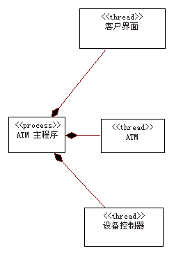

最简单的方法是将所有活动对象分配给公共线程或流程，并使用简单的活动对象调度程序，因为这样能将环境切换的开销降到最低。但是，在某些情况下，可能有必要将活动对象分布到一个或多个线程或流程之间。对大多数实时系统几乎肯定是这种情况，在实时系统中，用于代表逻辑线程的封装体有时必须满足严格的调度要求。
如果与其他活动对象共享操作系统线程的活动对象对某个其他的进程或线程发出了同步调用，而且该调用阻碍了调用对象的共享操作系统线程，那么这将自动暂挂位于调用流程中的所有其他的活动对象。现在就不一定会出现这种情况了：从活动对象的角度看是同步的调用在控制活动对象组的简单调度程序看来可能是不同步处理的
－ 调度程序暂挂发出调用的活动对象（等待其同步调用的完成），然后调度其他活动对象运行。
当原始的“同步”操作完成时，发出调用的活动对象就可以恢复了。但是，这种方法并非总是可用，因为它对于以下调度程序可能不可行：这样的调度程序被设计为拦截所有同步调用（不管这些调用会不会阻塞）。请注意，使用同一个操作系统进程或线程的活动对象之间的同步调用可能（在一般情况下）会被调度程序用这种方法进行处理
－ 而且，在发出调用的活动对象看来，在效果上与过程调用相同。
这使我们得出这样的结论：活动对象应该根据它们与阻塞线程的同步调用并发运行的需要来分组为进程或线程。也就是说，活动对象应与另一个使用阻塞线程的同步调用的对象封装到同一个进程或线程中的唯一可能是：它不需要与该对象并发执行，并且可以容忍不在其他对象受阻时执行。在极端的情况下，当响应性很关键的时候，这可能会造成有必要为每个活动对象安排独立的线程或进程。
对于实时系统，封装体的基于消息的接口意味着能更简单地想到这样一个调度程序：它能确保（至少对于封装体之间的通信）支持的操作系统线程永远不会受阻，甚至当封装体与另一个封装体同步通信时也一样。
但是，封装体还是可能对操作系统直接发出会阻塞线程的请求，例如，请求同步计时等待。如果封装体要共享通用的线程（并使用简单的调度程序来模仿并行），那么对于由封装体调用的较低级别服务就必须建立约定来避免这种行为。
作为一个一般规则，在上述情形中，使用轻量级线程比使用成熟的进程更好，因为这样涉及的开销要少。但是在一些特殊的情况下，我们可能还是希望利用进程的一些特殊特征。既然线程共享同一个地址空间，它们内在地就比进程有更大的风险。如果担心意外覆盖的可能性，那么就最好选择进程。而且，因为进程在大多数操作系统中代表独立的恢复单元，所以根据活动对象彼此独立恢复的需要将它们分配给进程可能会很有用。也就是说，需要恢复为一个单元的所有活动对象都可以一起封装到同一个进程中。
请为系统需要的每一个独立的控制流创建一个进程或线程（轻量级进程）。 线程应该在需要嵌套的控制流的情况下使用（即，如果在进程内的子任务级别上需要独立的控制流）。
例如，独立的控制线程可能需要完成以下操作：
-
区别软件不同区域之间的关系
-
利用分布式系统中的一个或多个节点中的多个 CPU
-
通过在控制线程被暂挂时将循环分配给其他活动来提高 CPU 的利用率
-
区分活动的优先顺序
-
支持数个进程和处理器之间的负载共享
-
通过拥有备份进程来实现更高的系统可用性
-
支持 DBMS、“事务管理器”或其他主要子系统。
示例
在自动柜员机中，必须处理来自三个不同来源的异步事件：系统的用户、ATM 设备（例如当自动取款机出现拥堵时）或者 ATM 网络（当网络发出关闭伪指令时）。要处理这些异步事件，我们可以在 ATM 本身中定义三个独立的执行线程，如下面用 UML
的活动类所显示。

ATM 中的进程和线程
|